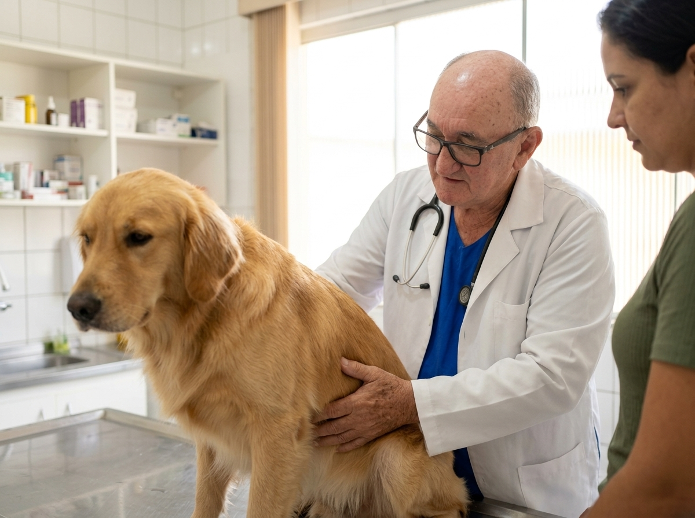
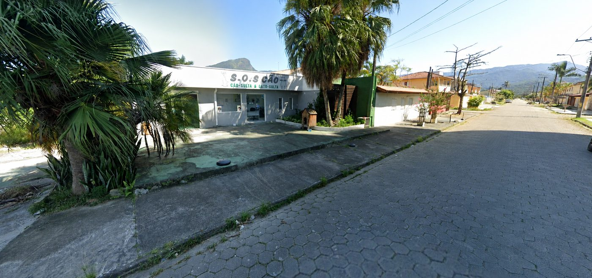
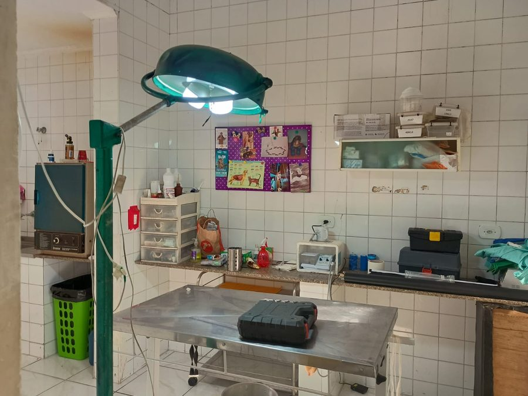
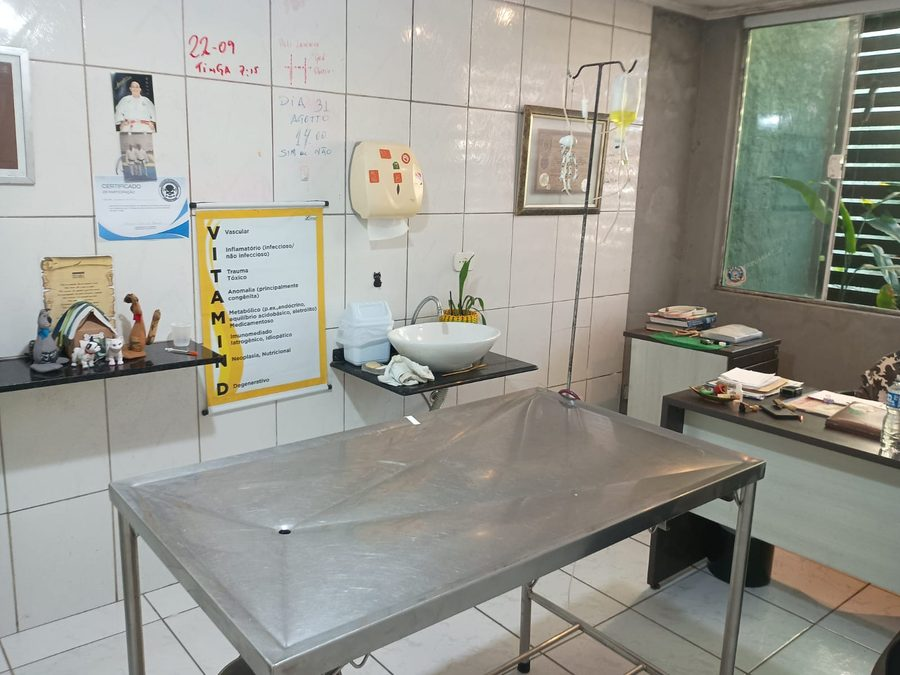
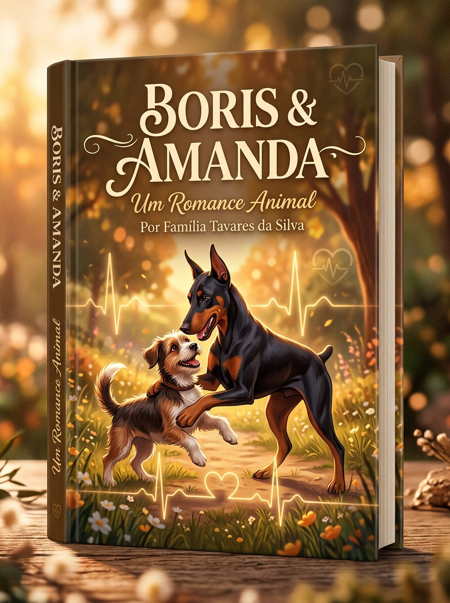

Muito mais do que uma clínica: uma casa de saúde animal com o cuidado humanizado do Dr. Walter Tavares na SOS Cão Caraguá. Atendemos cães, gatos e animais não-convencionais com a dignidade que eles merecem.
Escuta atenta, diagnóstico preciso & carinho em cada paciente
Na S.O.S CÃO, cada paciente é tratado com respeito singular. Da vacinação preventiva ao atendimento geriatrico especializado.
Consultas completas ("Cão-sultas & Gato-sultas"), exames minuciosos, vacinação importada e acompanhamento preventivo contínuo para evitar complicações de saúde.
Agendar ConsultaAcolhemos com maestria aves, galos, coelhos, répteis, roedores e pequenos animais. O Dr. Walter possui vasta bagagem no manejo de espécies diversificadas.
Atendimento EspecialAcompanhamento acolhedor focado em proporcionar conforto, controle de dores articulares e dignidade para a fase sênior do seu melhor amigo.
Cuidado SêniorEstética higiênica e tosa adaptada em um ambiente calmo, seguro e supervisionado clínica e carinhosamente pela nossa equipe veterinária.
Agendar Banho & Tosa
Mais de cinco décadas (50 anos) dedicadas integralmente a proteger a vida animal em Caraguatatuba com integridade, sabedoria e amor profundo.
Conhecido carinhosamente como Walter Dog, o Dr. Walter é o coração da clínica S.O.S CÃO. Ele representa o verdadeiro veterinário "à moda antiga": aquele que examina com rigor clínico refinado, escuta as histórias do tutor com calma e compreende que os animais são membros essenciais de cada família.
Em uma época em que atendimentos se tornaram impessoais e apressados, a clínica do Dr. Walter permanece como um refúgio de acolhimento em Caraguatatuba. Aqui, o compromisso é com a dignidade animal em cada fase da vida.
Conheça nosso espaço preparado com carinho para receber seu pet com conforto, higiene e segurança.



A satisfação e a confiança dos tutores de Caraguatatuba são nossa maior recompensa. Veja avaliações reais de quem traz seus animais na SOS Cão Caraguá.
"Dr Walter, que médico abençoado, um anjo levei meu coelho lá trata os animais com muito carinho e atenção, além de muito sábio e experiente, fora o cuidado e a atenção até com meu filho que é autista. Um excelente profissional e ser humano. Com preço justo, é aquele profissional que escolheu a profissão por AMOR !! DESEJOOO Muitas benção para ele e sua família."
"Excelente, são educados, prestativos e, o mais importante é; que a cada gesto vc percebe que eles amam os animais, sejam os animais bem cuidados, ou animais das ruas, quem quiser ir lá, vai ajudar o veterinário a cuidar de vários animais de ruas que ele adota."
"Minha cachorra foi atendida da melhor forma que eu já tinha visto, o Dr. Walter ama os animais e dá pra ver q ele faz isso de coração eu serei eternamente grato a ele, pq só quem tem um animal como um membro da família sabe o quão doloroso é ver o animalzinho sofrer, muito obrigado Dr. O senhor é uma pessoa incrível Deus abençoe vc sempre."
"Muito atencioso e carinhoso com todos. Super recomendo!!! Excelente profissional!"

Uma emocionante narrativa inspirada nas vivências reais do Dr. Walter Tavares ao longo de mais de cinco décadas de dedicação veterinária.
Escrito pela família do Dr. Walter com base nos ensinamentos e memórias vivenciadas na clínica, este livro digital aborda a história emocionante e cativante de resiliência, companheirismo e empatia pura entre animais marcantes (como a doberman Amanda e o pequeno companheiro Pitoko). Um legado emocional que inspira amantes de animais de todas as idades.
Respostas diretas para as dúvidas mais comuns dos tutores em Caraguatatuba.
Sim! Com mais de 50 anos de experiência em medicina veterinária, o Dr. Walter atende cães, gatos, coelhos, galos, aves ornamentais, roedores e pets não-convencionais.
O agendamento é extremamente prático: basta clicar em qualquer botão de WhatsApp aqui no site e falar diretamente com nossa equipe para escolher o melhor horário para seu pet.
Sim. A geriatria animal é uma das nossas grandes especialidades. Focamos no alívio de dores, ajustes nutricionais, exames periódicos e qualidade de vida para cães e gatos idosos.
Estamos situados em Caraguatatuba - SP (Caraguá), atendendo toda a comunidade local com facilidade de acesso e ambiente acolhedor.
Estamos de portas abertas na SOS Cão Caraguá para cuidar com carinho da saúde do seu animal.
SOS Cão Caraguá
Av. Amazonas, 1820 - Indaiá, Caraguatatuba - SP, 11665-340
Segunda a Sexta-feira: 09:00–18:00
Sábado: 09:00–13:00
Domingo: Fechado